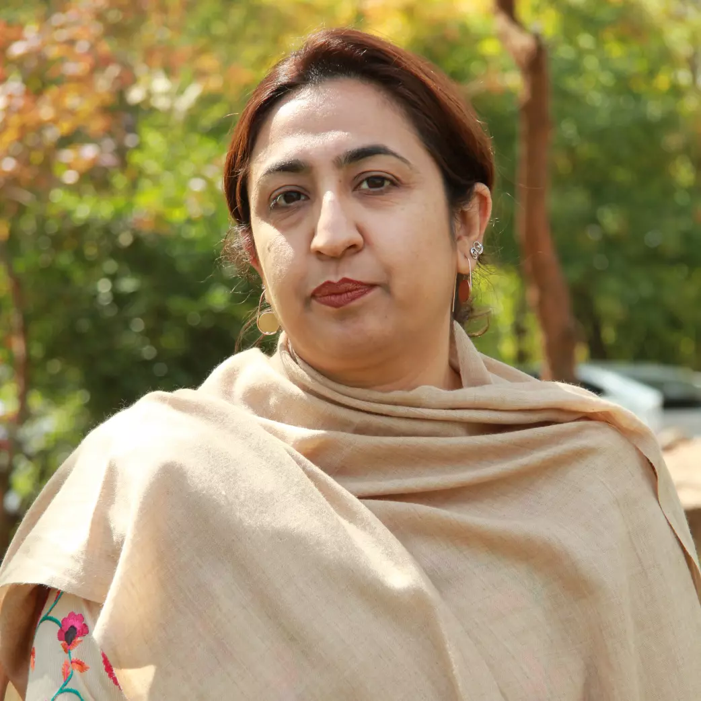

Academic Leadership
Faculty & Research Fellows (8 Members)
Our distinguished professors and researchers leading teaching and interdisciplinary research across our BS, MPhil, and PhD programs.
Prof. Dr. Raja Qaiser Ahmed
Professor & Director
Directs the Area Study Centre, specializing in strategic foreign policy analysis and governance in North America.

Dr. Sadia Sulaiman
Associate Professor
Specializes in African political economy, continental trade pacts, and Pakistan's diplomatic outreach to African nations.
Dr. Bahramand Shah
Assistant Professor
Expert in Latin American economic blocs, regional trade integration, and multilateral diplomatic engagements.

Dr. Zeeshan Haider
Assistant Professor
Researches legislative policymaking in Washington, domestic political shifts, and transatlantic alliance systems.

Dr. Ayesha Siddiqui
Assistant Professor
Focuses on democratic transitions, governance challenges, and human security frameworks across East and Southern Africa.

Dr. Bilal Ahmed Tariq
Senior Research Fellow
Specializes in Latin American diplomatic history, regional security complexes, and trade cooperation with Asian economies.

Dr. Kamran Malik
Assistant Professor
Expert on Canadian bilateral relations, multilateralism, and polar/northern security strategy.

Dr. Nadia Jabeen
Research Fellow
Researches maritime geopolitics in the Indian Ocean and Horn of Africa region, alongside economic integration initiatives.